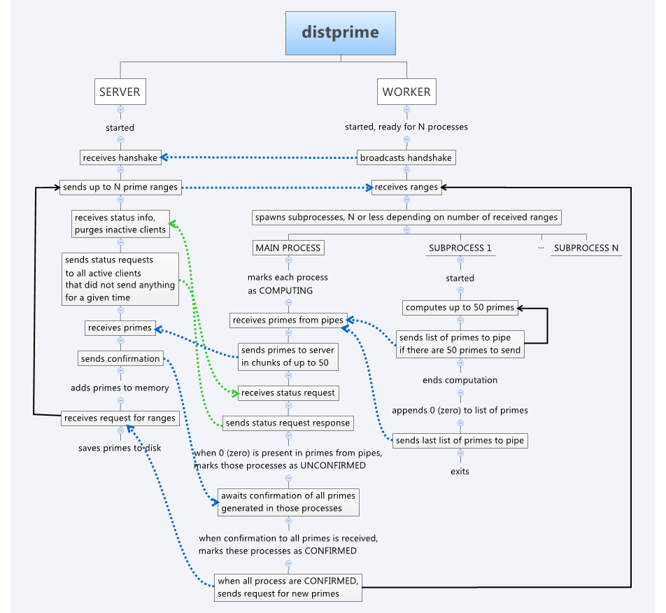

Distprime
Unix Programming 2013 project by Mateusz Bysiek
Overview
This program should enable a user to discover primes from given range using many compuers.
It is a client-server application that moves most of the computations to the clients. The
program is capable of investigating numbers from 1 to INT64_MAX, which
usually has value 9223372036854775807 (2 to power 63, minus 1).
This is free software, and it is available here:
assembla.com.
How to use
Server
To start the server at port defined as SERVER_PORT in
distprimecommon.h, enter:
distprime 123400000000 123400500000 primes.log
This will start a server that will coordinate discovery of prime numbers between
123400000000 and 123400500000 inclusive, and save results to primes.log.
Worker
To start worker program, enter:
distprimeworker 4
This will launch a worker program that discovers primes in 4 processes in parallel,
assuming that worker can discover server using UDP broadcast.
Communication protocol

The above image shows a general overview of communication protocol used in the
application. Green lines indicate exchange that does not have connection to prime numbers
discovery, blue lines indicate inter-process communication (either over the network or
pipes). Workflow happens from top to bottom unless indicated otherwise with an
arrow.
This image is just a sketch, actual implementation can handle receiving many different
messages in different order from many sources.
To avoid certain problems with networking, the maximum number of prime numbers sent in one
message is 50. This value is a result of an approximation that follows.
Each prime number can have at most 19 characters (assuming typical MAXINT_64 value), and
50 times 20 is 1000. After adding XML message overhead, we get around 1200 bytes. Typical
MTU is around 1500, this means that in most cases the packet will not be fragmented. To
change amount from 50 to some other value, change PRIMEMAXCOUNT value in
defines.h.
Details
Network communication is done exclusively using XML. Root node of every message is
<distprimemsg>. Single message can have three different sub-nodes:
'worker', 'server' and 'process'. Each message can have at most one 'worker', at most one
'server', and any number of 'process' nodes.
Each message has different constraints: some can be sent only from server, other only from
workers. Also, each message type is defined by which components it contains.
There is limited number of different messages. Below 'W' is worker, 'S' is server, 'P' is
process. 'W to S' means that this message is sent only from worker to server, and '1W #P'
means that such message must contain exactly one worker node, at least one process node,
and cannot contain server node.
- handshake, W to S, 1W
- response to a handshake, S to W, 1W 1S #P
- ordinary set of primes, W to S, 1W 1P
- confirmation of ordinary set of primes, S to W, 1W 1P
- final set of primes, W to S
- confirmation of final set of primes, S to W, 1W 1P
- request for prime ranges, W to S, 1W
- prime ranges, S to W, 1W #P
- status request, S to W, 1S
- status, W to S, 1S 1W #P
Example messages
Please see testxml.xml.
Structures
There is a 3 level structure of data: serverData depends on workerData, which depends on
processData.
Server uses all 3 levels to maintain its state.
Worker program uses 2 levels (workerData & processData) to manage its state.
Testing
There are various macros defined for testing the application, see source code for details.
They are mostly located in defines.h. They are disabled by
default.
One of the macros simulates the situation in which there is a significant packet loss,
25%.